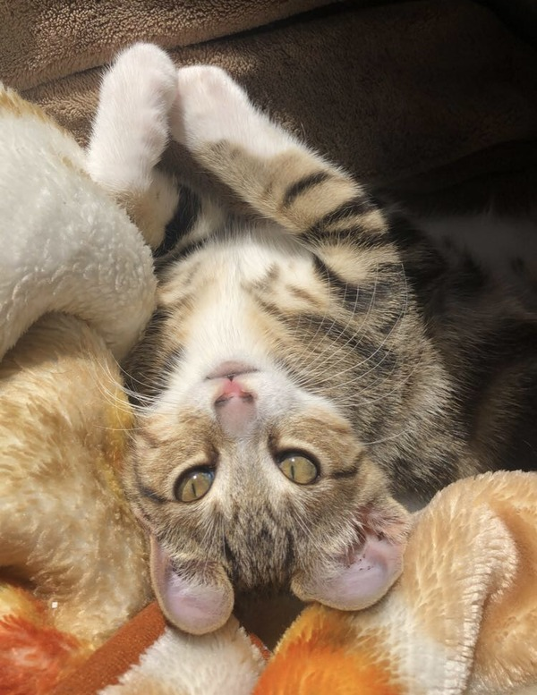
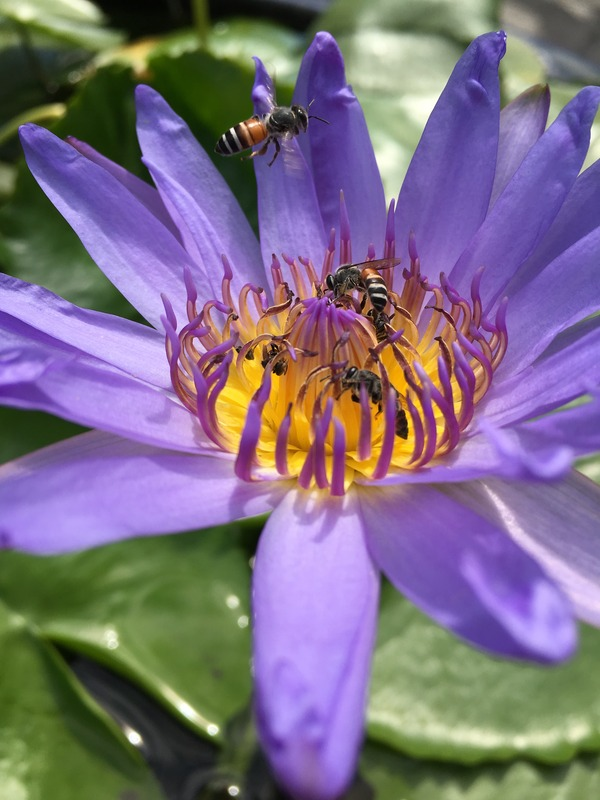

When thinking about game design, it is crucial to think about usability to enure that users are getting the best experience. UI design holds a pivotal role in game design, exerting a substantial impact on the comprehensive gaming experience for players. The positioning of UI elements in a game can profoundly shape the way players engage with and comprehend the game. I found the concept of sliders quite intriguing, particularly in how they enhance the user experience by eliminating the need to transition to a different scene. Sliders provide users with the ability to finely adjust a range of game settings, including graphics quality, audio volume, sensitivity, and more. This level of customization empowers players to customize the game according to their personal preferences and the capabilities of their hardware, resulting in a more individualized gaming experience.
Another important aspect is user choices. Choices made by players, frequently presented via pop-ups or interactive dialogues, hold a pivotal position in game design, exerting a substantial influence on the comprehensive gaming experience. Engaging players through the provision of choices transforms them into active contributors to the game's narrative, and this immersion is essential for crafting a more captivating and lasting gaming adventure.
visual thinking analysis

Bianca Resendiz 2023
This image is interesting because of how the lighting points directly onto the cat in the picture making the eyes stand out. You can see the beautiful patterns with white boots. Something one wouldn’t know is that the cat in the picture is my cat Haku. This image relates to the topic of my collection because this is my own pet who has really made an impact on my life and helped with my mental health. My interactions with him have brought happiness into my life and boosted my mood throughout the years. My collection of photos tells a story about different people, like testimonials of how their own pets help with their own mental health. I have a connection to this because I’m someone who has struggled with my mental health and after adopting Haku, it was a life changing experience.

Sofia Simon 2023
This image is about capturing the bees on the flower for pollination. It is a very clean and close up shot of the flower focusing directly on the bees. It appears in the image that the bees are trying to get pollination. It seems that there are about two bees already on the pollination of the water lilies and the third bee is just arriving to get some as well. You can tell the lilypad leaf in the back is there but blurred out indicating that the focus should be on the lotus flower. I assume it is a lilypad in the background because of the water around. The most obvious aspects of the image are the bees trying to feed on pollen, the purple lotus flower, and lilypads on water in the back.
visual thinking strategies research
When looking at random photographs, we usually just look and observe. After reading this article, it made me think about how we should start diving deeper to expand our skills in visual thinking. It starts off with pointing out every single detail from an image, examining what may be going on. It’s a good way to continue on and practice by doing it on a regular basis. This is a way of continuously expanding/sharing ideas to practice close reading. Asking questions throughout the close reading allows for one to make observations without having any answer.
I find it pretty cool how these skills were presented in a classroom full of students who were willing to participate. I was able to notice how these practices went to this extent of creating new ideas, thoughts, and opinions but also relationships with those around who are also having conversations. It starts conversations between the people around building ideas off of one another. It’s looking closely at something without being told any context, which is the fun part of trying to figure it out on your own and those around you.
overlays design pattern research
For our upcoming MadLibs project, it is important to understand the principles of overlay designs to create effective modals and dialog windows. Modals should have a specific purpose, such as confirming an activity or asking for information. In this case, we will be asking for information in order to get some user interactions without complicating the user experience in any way. To guarantee a consistent user experience, keeping the design language and layout of modals consistent is important. Design components such as typeface, colors, and button styles must also stay consistent. Then we have placement. The placement of the modal should draw emphasis such as centering it on the screen then making sure the size is proper, not too big or too little.
To highlight that the modal is a temporary layer over the main content, using a semi-transparent backdrop overlay comes into play. Typically, the overlay box is substantially smaller than the underlying page. Because the rest of the background page is frequently covered to heightened attention on the overlay content. Users should be able to dismiss the modal by clicking outside of it if this overlay is clickable. Keeping the modal text brief, relevant, and simple to grasp by avoiding confusing users. Providing too much information or too many options can cause users to become overwhelmed.
research on form design
When it comes to form design, one of the main concepts of form usability and any web design with HTML and CSS is accessibility. Making your website accessible ensures that all potential users, including those with exceptionalities, have a positive user experience and can easily access any information. By applying the practices for accessibility, it also helps improve the site's usability for all users.
One important key is providing sufficient contrast with the foreground text. Whether on photos, gradients, buttons, or other items, foreground text should have enough contrast with background colors. This key, however, does not apply to words that appear by chance in an image. While color is also very useful, relying solely on color to convey information should not be the focus. When using color to differentiate items, it is important to ensure there is an additional non-color way to identify them. It makes it easier for users to follow along throughout.
Netflix is an example of a form being used when trying to reach out for any issues. I think Netflix is a great example in the sense of being very direct and straightforward to work through. They will welcome one by name, provide recommendations, and address any questions they believe you may have.